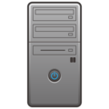
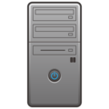

Zawawi Business Machines LLC (ZBM) │Oman │December 1997 – December 2003
ZBM, Oman is a leading one stop for IT solutions in Oman providing customers with IT solutions, network infrastructure, technology & human resources.
Sales Manager
Reported to: General Manager, Team size: 8
Responsibilities
- Manage all commercial activities including sales, procurement, payment allocations, payment collections from customers in line with the company’s business plan.
- Lead and manage the sales team, support formulation & implementation of strategies & plans and monitor performance to achieve all sales targets & goals.
- Develop various sales tools to facilitate smooth execution & monitoring of sales activities like sales kits, call reports, performance reports, account mapping templates and questionnaires.
- Manage large IT projects through all stages from partner identification through client coordination & management, partner interaction, management of internal resources to successful project execution.
Highlights
- Made significant contributions in growing the Dell business from USD 1.5 million to USD 4 million per year.
- Consistently achieved team & individual targets for revenue (about USD 6 million per year) and profit margins (15% of the revenue) from 2001 to 2003
- Managed key accounts like Omantel, Petroleum Development Oman (PDO), Sulatan Qaboos University and Bahwan Automotive Centre.
- Secured several large prestigious orders from telecom companies, private companies & oil companies successfully penetrating competitor strongholds.
- Sold Quartz core banking solution to Oman International Bank in association with partner Tata Consultancy Services (TCS) of India Value: OMR 1.7 million
- Established new business alliances to diversify into new business segments like IT projects, turnkey & consultancy services including infrastructure development & security solutions, IT manpower outsourcing services and banking & financial
solutions.